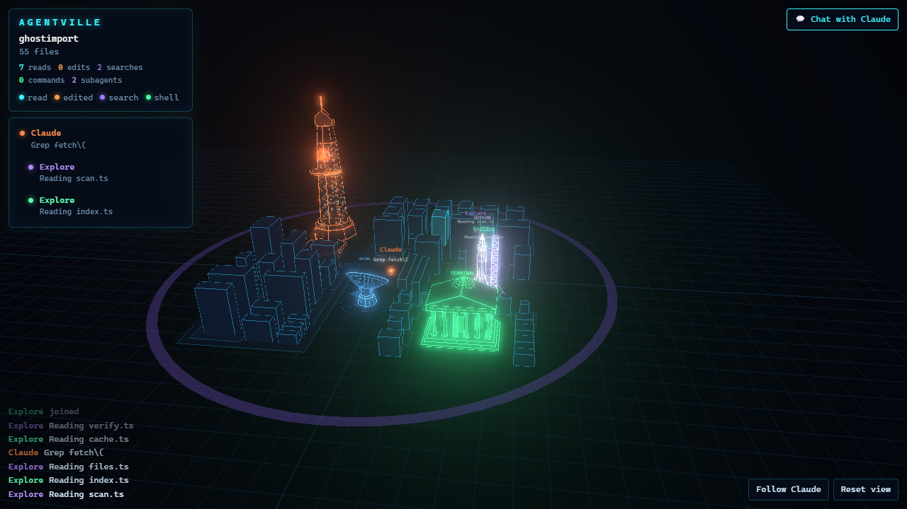

A city that works
Your codebase, with Claude walking its streets
Four landmarks stand for the work that happens outside your code. Agents walk to them like to any other building.

The landmarks
HQ, the bank, the radar and the launch pad
- HQ tower: where agents start, think about your prompt, and rest when they're done.
- The bank: shell commands, scrolling across its stock ticker.
- The radar: web fetches, searches and MCP tools fire a beam into the sky.
- The rocket: files outside your workspace light up its engines.

Subagents
Watch the team spread out and come back
Claude greps while two Explore subagents read files in parallel. Buildings they read glow cyan. When a subagent is done, it walks back to Claude and merges in a burst of its color.
The orbs don't fly over the roofs: they find their way through the avenues between folders and the alleys between files.
ReadWalks to the building; a cyan scan sweeps itEditAmber ring and sparks on the roof, warm all sessionGrepA violet ring sweeps the folder's districtBashWalks to the bank; the command scrolls on the tickerWebFetchWalks to the radar; the dish firesTaskA smaller orb appears, labelled with its typePermissionTurns amber with a bouncing !FailureFlashes red with "✗ failed"